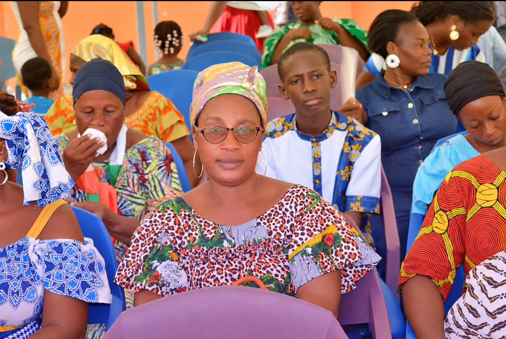
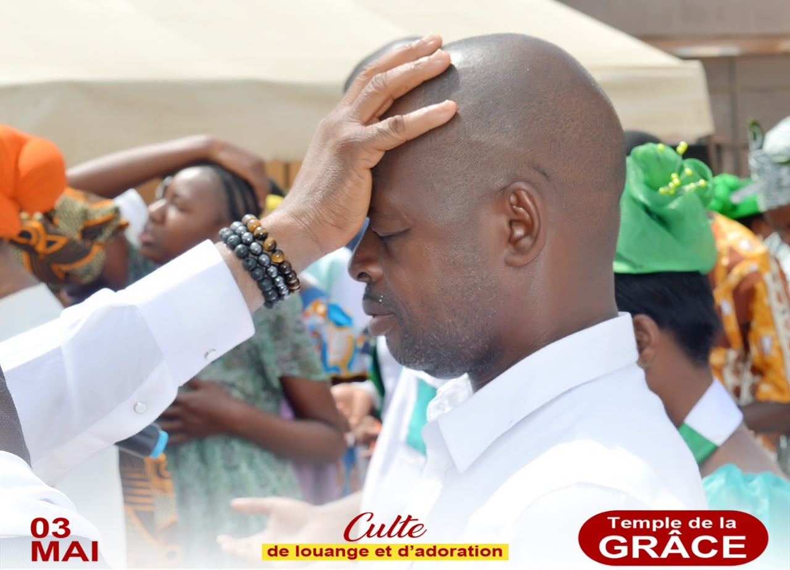
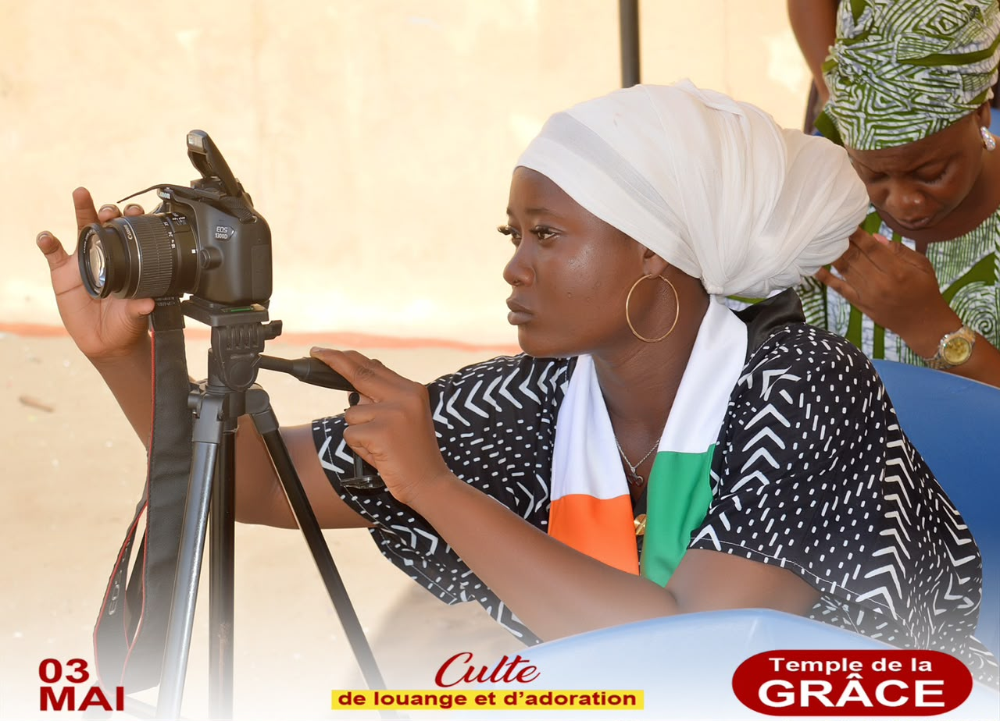

Culte du dimanche
Horaire : dimanche, de 8 h à 12 h.
Un temps de louange, d'adoration, de prière et de prédication de la Parole de Dieu.
Où la tristesse se transforme en joie.
Une communauté de foi, d'amour, de partage et d'espérance.
Découvrir notre égliseBienvenue à UFAJ Église Chrétienne ! Nous sommes une communauté unie par la foi, l'amour, le partage et l'espérance.
Notre mission est d'accompagner chaque personne dans sa relation avec Dieu et de créer un espace où chacun peut trouver la paix, la joie et la communion. Nous mettons la Parole de Dieu au cœur de nos enseignements afin de partager le message de l'Évangile et de contribuer à la transformation des vies.
Horaire : dimanche, de 8 h à 12 h.
Un temps de louange, d'adoration, de prière et de prédication de la Parole de Dieu.
Horaire : mercredi, de 19 h à 21 h.
Un moment de prière, d'enseignement biblique et d'affermissement dans la foi.
Référence biblique : Jean 8:26-29.
Que la Parole de Dieu guide notre marche, fortifie notre foi et nous conduise dans la vérité.
« Celui qui m'a envoyé est avec moi ; il ne m'a pas laissé seul, parce que je fais toujours ce qui lui est agréable. »
Jean 8:29



Adresse : UFAJ Vridi Cité, Abidjan, Côte d'Ivoire, près du collège Labion Maxime.
Téléphone : +225 0702113431
E-mail : Ufajvridicite@gmail.com
Nous contacter sur WhatsApp